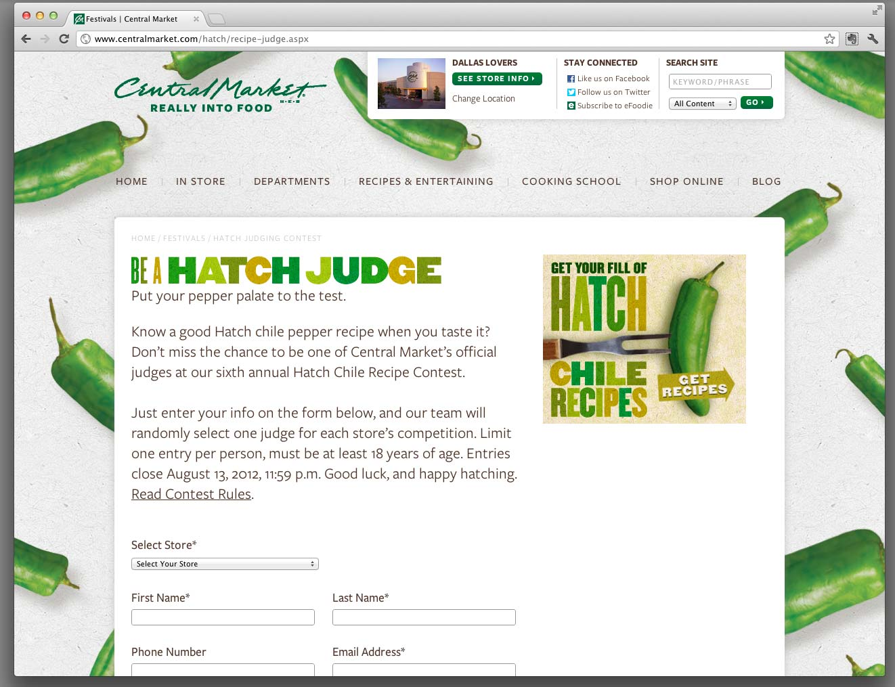
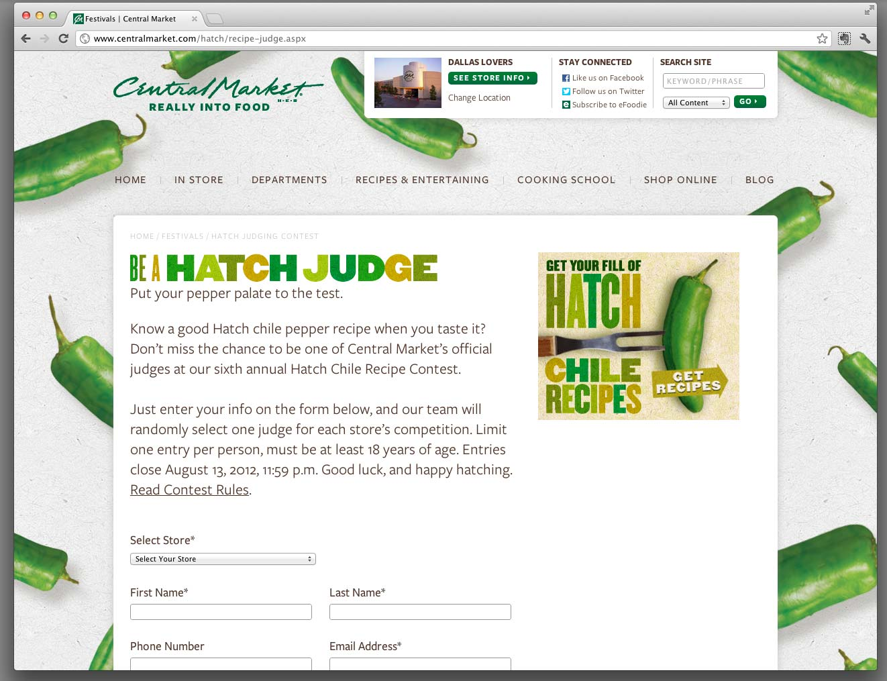

Hatch chile peppers are delicious. Every year, Central Market gets several tons of hatch peppers and has a Hatch festival in-store. For the 2012 festival, we made a small landing page. For 2013, we made another version that is larger and more social media friendly.
Launch Site
Client: Central Market
Role: Technical Consultant, Developer
Technology: HTML5, .NET, Kentico CMS, less CSS compiling
Created at Click Here Labs
 
back to top

back to top